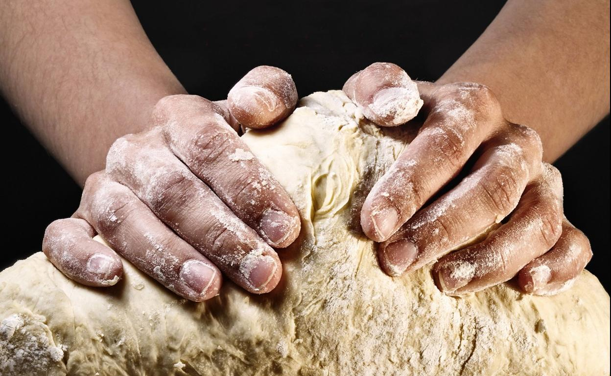
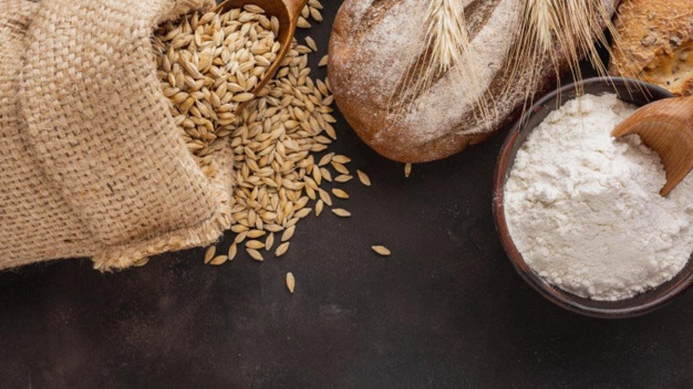

QUE BÓ, TRADICIÓ I ARTESANIA
Benvinguts a "QUE BO", la pastisseria artesanal que endinsa els paladars als autèntics sabors de les Balears. Amb una passió desbordant per la dolçor i un amor incondicional per la tradició, ens dediquem a crear autèntiques delícies que capturen l'essència de la nostra terra.
A "QUE BO", cada dolç és una obra d'art elaborada amb dedicació i cura. Amb les mans expertes dels nostres mestres pastissers, donem vida a receptes centenàries que han passat de generació en generació. Cada ingredient és triat amb esmerçament, buscant sempre els productes locals de més alta qualitat. Això ens permet oferir un sabor únic i autèntic que transporta els nostres clients a la riquesa gastronòmica de les Illes Balears.
La nostra pastisseria valora profundament les costums i tradicions de les Balears. Respectem i honorem les receptes antigues que han resistit la prova del temps. Treballem amb molta estima per mantenir viu el llegat culinari de les nostres illes i, al mateix temps, donar-li una mirada fresca i innovadora. Amb cada dolç que preparem, celebrem la bellesa de la nostra cultura i ens enorgulleixem de poder compartir-la amb els nostres clients.
A "QUE BO", la defensa del producte local és un pilar fonamental. Col·laborem estretament amb productors i agricultors locals per assegurar-nos que els nostres ingredients són frescos, naturals i de proximitat. Aquest compromís amb el producte local no només ens permet oferir dolços de qualitat excepcional, sinó que també contribueix al desenvolupament sostenible de la nostra comunitat.
Cada cop que visites "QUE BO", et convidem a experimentar la passió que posem en cada dolç que fem. Sigui un ensaïmada amb la seva textura lleugera i els seus fils de cabell d'àngel, un pastisset farcit amb ametlles o un crespell, cada mossegada t'endinsarà en el món dels autèntics dolços de les Balears.
Entra a "QUE BO" i descobreix una pastisseria on l'art, la tradició i el sabor es troben en perfecta harmonia. Estem encantats d'obsequiar-te amb la dolçor inigualable de les nostres creacions, i ens sentim honorats de compartir amb tu la riquesa de les Balears. Vine i deixa't sorprendre per la màgia que només una pastisseria artesanal com "QUE BO" pot oferir."